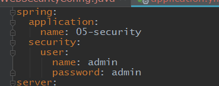
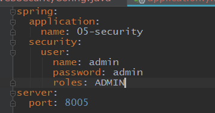
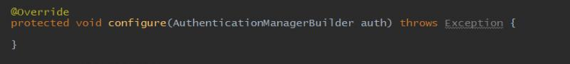
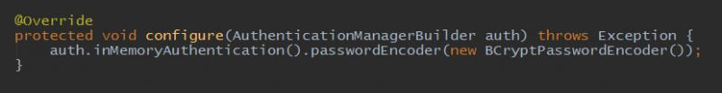
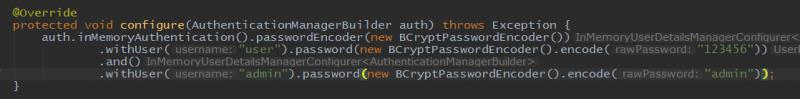
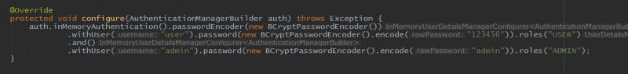
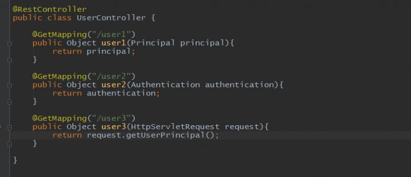
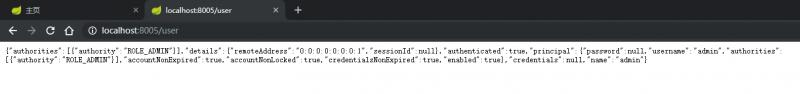
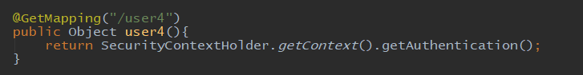

前面的例子中我们使用的都是配置文件中配置好的默认用户：

除了可以配置账号密码，还可以在配置文件中配置角色：

这个角色是后面实现权限过滤的重要内容，后面会重点讨论。
这样在配置文件中默认用户局限性还是很大的。我们想配置多个不同的用户，每个用户拥有不同的角色，并且还有最重要的一点，用户的密码应该是加密的，不应该是明文。
想在内存中配置，首先要实现security配置类的 configure(AuthenticationManagerBuilder auth)方法：

然后配置密码加密方式，这里我们使用spring自带的推荐方式：

下面是增加用户，可以直接在后面用构造的方式添加用户：

我们添加了两个用户，下面给每个用户后面分别配置一个角色：

这样就在内存中配置好了两个默认用户，如果有需要，还可以继续在下面增加。注意上面两个用户的密码的加密方式。
在controller类中，获取当前登录用户的方式非常简单，有很多种：

返回的内容都是一样的，登录成功后，可以访问此接口：

信息中包含了用户的用户名等基本信息，已经拥有哪些角色，这些角色前面都加上了ROLE_ 的前缀。
在代码中获取当前用户的方式是：

返回的内容与前面的一致。